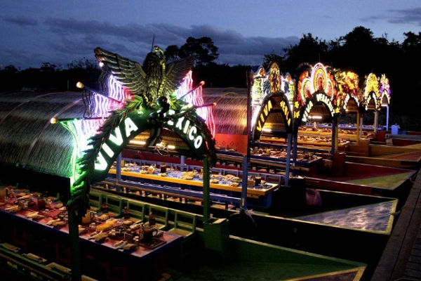
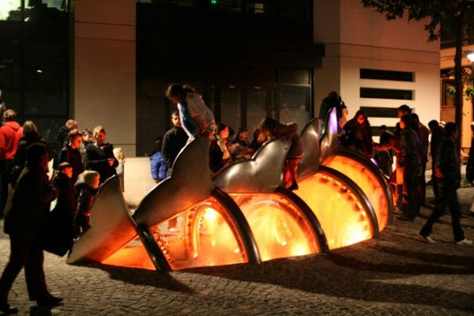
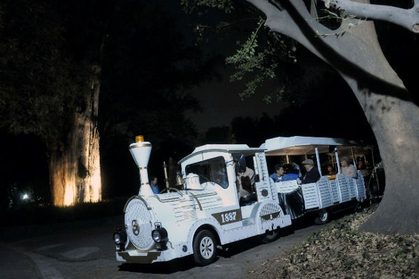

Nuestro estilo de vida, se ha desarrollado a través de los trabajos y estudios los cuales nos marcan un régimen de horario estricto, por lo que son más las actividades diurnas que desarrollamos; por lo cual, la noche es representada como una barrera del tiempo que cada vez más se está fragmentando con los esfuerzos de participaciones económicas, culturales, sociales, etc.
La ciudad nocturna(24/7) tiene como fin común proponer una estrategia que pueda revitalizar los espacios que se encuentran en abandono, (falta de actividad en la zona) y pretende difundir y extender las actividades que se realizan en la zona durante los «espacios vacíos» como lo es el mediodía, así como la jornada laboral y la noche; a través de una planificación urbana que permita la continuación de las actividades realizadas durante el día, además de la creación de actividades nocturnas específicas.
“La ciudad 24/7 reposa sobre la economía nocturna, especialmente sobre el sector de la diversión. Dado que entra en competencia con otras ciudades, y con otras actividades en el marco de la propia ciudad, este sector es espacialmente selectivo: tiene diferentes grados de especialización y volumen de oferta según la jerarquía urbana, y se distribuye de forma limitada y concentrada en algunos barrios de la ciudad”
González y Morales, 2013.
Dentro de los beneficios de promover una ciudad 24/7 a través de una economía nocturna, se encuentra la generación de mayores ingresos económicos, ya que se fomenta la apertura de nuevos negocios en horarios nocturnos o de los mismos pero con mayor rango de horario al normal, que ofrecen una variedad de eventos a los cuales se puede acudir en el transcurso de la noche.
A su vez, se convierte en una fuente de empleo adicional para cubrir la demanda de los lugares y negocios en los nuevos horarios nocturnos, regenerando el espacio urbano, a través de un flujo continuo de las personas. Lo anterior deriva además, en los gastos a los servicios y productos que se ofrecen en el área.
Crea una gama de diferentes actividades a realizar en el zona, lo que invita a los visitantes y lugareños a permanecer en la zona por más tiempo, lo que ofrece una oportunidad de revitalización de las zonas urbanas que por la noche caen en abandono por la falta de actividades a realizarse.
Existen ciudades, como Buenos Aires en donde se promueven acciones para que las personas puedan realizar actividades nocturnas que generan un atractivo para que salgan a pasear y disfrutar de los diferentes servicios o eventos que se presentan en vez de regresar a sus casas, ya sea ofreciendo una serie de alianzas entre los bares y restaurantes o un atractivo evento cultural.

La generación o la ampliación de los horarios de los negocios estarán atendiendo a una comunidad con características específicas, con intereses similares e interrelacionados, formando subconjuntos que constituyen un mismo espacio físico funcional con necesidades específicas. Potencialmente ofrecen una diversidad de actividades recreacionales que generan una demanda propia, fuera de las actividades de la mañana, que solo se pueden apreciar en la noche u obtener ventaja de esta.
Este nuevo movimiento de personas crea una nueva percepción de la seguridad en la ciudad, puesto que una ciudad en la noche, sin ninguna tipo de actividad o personas por el lugar hace que se perciba insegura, peligrosa. Realizar diferentes actividades en la zona de noche estimularía a un mejor flujo de personas en el sector, generando vida y movimiento en las calles.

Para tener un balance dentro de las atracciones y actividades a realizar en una ciudad, es recomendable generar y fomentar destinos turísticos que ofrezcan un sinfín de opciones en cuanto esparcimiento para las diferentes edades, nivel socioeconómico, familias, culturas, etc. Por lo que, el ofrecer lugares donde los visitantes puedan disfrutar tanto de día como de noche, es una forma de ser un atractivo turístico distintivo en una ciudad. En México DF, se ofrece un recorrido nocturno en el Bosque de Chapultepec, para visitar sitios emblemáticos atractivamente iluminados, en bicicleta o a bordo de un tren.
Con esto se promueve que la sociedad adquiera un mayor sentido de pertenencia a un lugar, que se identifique mejor con el espacio que habita. Vivir los espacios durante el día o la noche, genera una seguridad en las calles, por lo que deben existir diferentes elementos que acompañen a la actividad para ofrecer una mejor oferta, como una buena iluminación en las vialidades y diferentes tipos de movilidad urbana. Pero no solo eso, si no generar una metamorfosis en la cultura existente de la sociedad.
El desarrollo de estos lugares debe de ser adecuado a las necesidades de las diferentes zonas de una ciudad, para que los habitantes disfruten de una manera respetuosa los espacios brindados, por lo que se deberá trabajar con todas las personas involucradas al respecto y llegar a un acuerdo sobre la solución de los problemas que puedan surgir con los nuevos establecimientos y eventos.

Referencias
- Ciudades Efímeras: Transformando el Turismo urbano a través de la producción de eventos. (González y Morales, 2013)
- Distritos y redes en la conomía nocturna en la Ciudad de México
- Economía nocturna